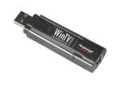

Hauppauge WinTV Nova-T Stick
Dieser Artikel wurde für die folgenden Ubuntu-Versionen getestet:
Dieser Artikel ist mit keiner aktuell unterstützten Ubuntu-Version getestet! Bitte diesen Artikel testen und das getestet-Tag entsprechend anpassen.
Zum Verständnis dieses Artikels sind folgende Seiten hilfreich:
 Die Hauppauge WinTV NOVA-T USB-Stick-Serie umfasst mehrere Modelle. In aktuellen Ubuntu-Versionen sollten sie direkt lauffähig sein; ggf. muss das Paket
linux-firmware
 mit apturl
mit apturl
Paketliste zum Kopieren:
sudo apt-get install linux-firmware
sudo aptitude install linux-firmware
installiert werden
Die Serie umfasst folgende WinTV Nova T-Modelle:
| USB ID | Modell | Demulator |
| 2040:7050 | Model 294 | DiB7700M |
| 2040:7060 | Model 1132 | DiB7700P |
| 2040:7060 | Model 308 | DiB7700P |
| 2040:7060 | Model 99063-001 'lite' | DiB7700P |
| 2040:7060 | Model 293 (SL-293-V2.4-GER) | DIB7000PC |
| 2040:7070 | Model 294 G (in Deutschland Nova-T-lite) | DiB7070P |
| 2040:7070 | Nova-T-CE | DiB7070P |
| 2040:7070 | Nova-T-SE Modell 1166G | DiB7070P |
| 2040:7070 | Model 1157G | DiB7070P |
| 2040:7070 | Model 353 'live' | DiB7070P |
| 2040:7070 | Model 1277 | DiB7070P |
| 2040:9580, auch 2040:5200 | Model WinTV-NOVA-TD | DiB7070P |
Überprüfung der Funktion¶
Im Terminal den Befehl
dmesg | grep dvb
eingeben. Beispielausgabe ist dann etwa Folgendes:
[ 35.028736] dvb-usb: found a 'Hauppauge Nova-T Stick' in warm state. [ 35.028774] dvb-usb: will pass the complete MPEG2 transport stream to the software demuxer. [ 35.438352] dvb-usb: schedule remote query interval to 150 msecs. [ 35.438355] dvb-usb: Hauppauge Nova-T Stick successfully initialized and connected. [ 35.438611] usbcore: registered new interface driver dvb_usb_dib0700
Wenn der Stick nun im Warm-Mode gestartet wurde funktioniert er.
Nova TD-Version¶
Dieser DVB-T-Stick beinhaltet zwei TV-Tuner, sowie zwei Antennenanschlüsse. Diese können unabhängig von einander als adapter0 und adapter1 in /dev/dvb angesprochen werden. Zu adapter0 scheint die seitlich am Stick befindliche Antennenbuchse zu gehören.
Der "Diversity Mode", der die zwei Tuner zusammengeschaltet nutzt, um die Empfangsqualität zu verbessern, ist zur Zeit nicht in den Linux-DVB Treiber integriert, so das nur der "Dual Tuner Mode" genutzt werden kann. Dazu muss zunächst über das "Diversity Utility" auf einem Windows oder MacOS System in den "Dual Tuner Mode" gewechselt werden. Dies ist nur einmal notwendig, danach wird dieser Modus weiter genutzt.
Problembehebung¶
Es wurden verschiedene Probleme mit MythTV berichtet. Hierzu beide unten vorgeschlagenen "'options'" vornehmen.
Fernbedienung¶
Im Prinzip funktioniert die Fernbedienung mit dieser Anleitung  .
.
Einige Modelle produzieren jedoch "unknown keycodes". Dann empfiehlt sich über die Datei /etc/modprobe.d/options die Fernbedienung zu deaktivieren. Dazu die Datei in einem Editor[3] mit Root-Rechten öffnen und folgende Zeile eintragen
options dvb_usb disable_rc_polling=1
Schlechter Empfang¶
Es kann ratsam sein den eingebauten Verstärker manuell zu aktivieren. Hierzu in die Datei /etc/modprobe.d/options
options dvb-usb-dib0700 force_lna_activation=1
eintragen.
Probleme¶
Das Model 1277 stellt an einem ASRock 939A785GMH/128M mit Kernel 2.6.31-22 nach einigem Tuning den Betrieb mit folgenden Meldungen ein:
DiB0070 I2C read failed DiB0070 I2C write failed ...
Das Problem lässt sich mit den Einstellungen, die in den unten aufgeführten Links in der Sektion Firmware vorgeschlagen werden, insbesondere für Mythtv lindern, aber leider nicht nachhaltig lösen. Insbesondere wenn mehrere Sticks im Einsatz sind, eskaliert die Situation.
- Erstellt mit Inyoka
-
 2004 – 2017 ubuntuusers.de • Einige Rechte vorbehalten
2004 – 2017 ubuntuusers.de • Einige Rechte vorbehalten
Lizenz • Kontakt • Datenschutz • Impressum • Serverstatus -
Serverhousing gespendet von